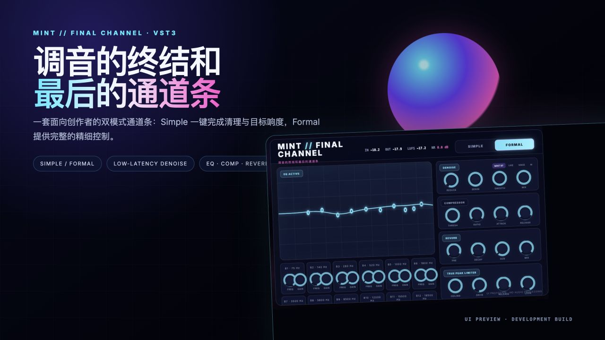
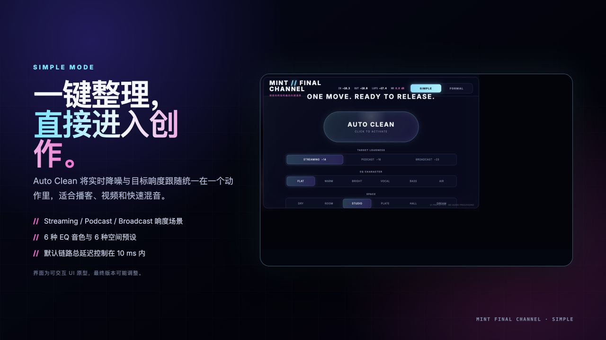
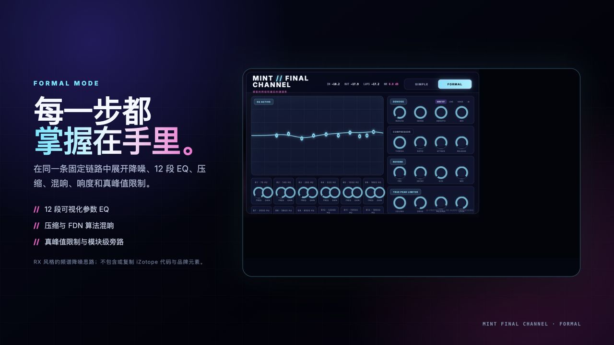
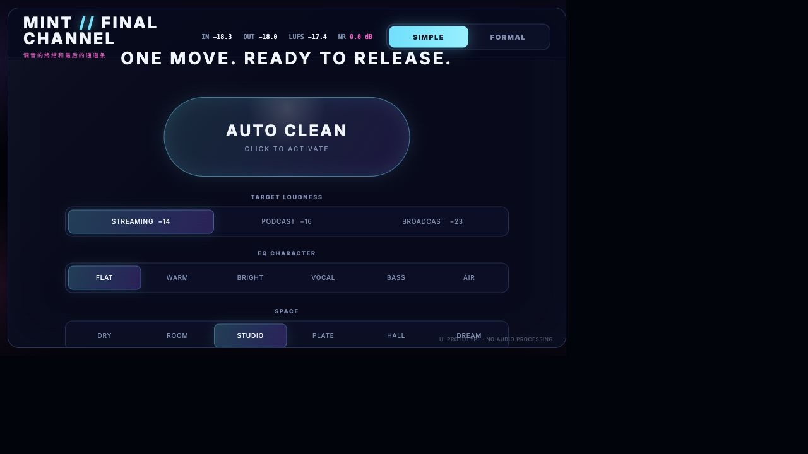
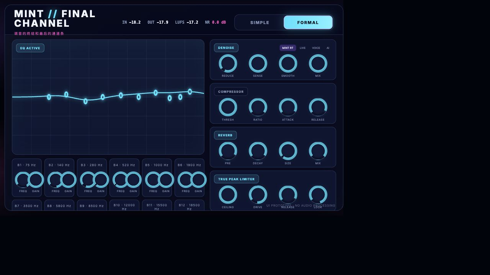

MINT // FINAL CHANNEL · VST3
调音的终结和
最后的通道条
一套面向创作者的双模式音频通道条：Simple 一键完成清理与目标响度，Formal 提供完整的精细控制。
UI PREVIEW · DEVELOPMENT BUILD

PROJECT OVERVIEW
把复杂留在里面，
把选择交给创作者。
它不是把两套处理链拼在一起，而是让 Simple 与 Formal 映射到同一组底层参数。切换模式不会改变声音，只改变你看到的控制深度。
<10 ms默认处理链的低延迟目标，适合接近实时监听。
12 BandsFormal 模式的可视化参数 EQ 设计。
2 ModesSimple 快速出结果，Formal 完整控制。
Offline模型与音频处理均在本地完成，不上传音频。
SIMPLE MODE
一键整理，
直接进入创作。
Auto Clean 将实时频谱降噪与目标响度跟随统一在一个动作里，适合播客、视频和快速混音。
- Streaming / Podcast / Broadcast 响度场景
- 6 种 EQ 音色与 6 种空间预设
- 模块独立开关与实时电平反馈


FORMAL MODE
每一步都
掌握在手里。
在一条固定处理链中展开降噪、12 段 EQ、压缩、FDN 混响、响度和真峰值限制。
- 可视化多频段参数 EQ
- 压缩、算法混响与模块级旁路
- 真峰值限制与低延迟前瞻
REAL UI CAPTURES
当前界面实拍

